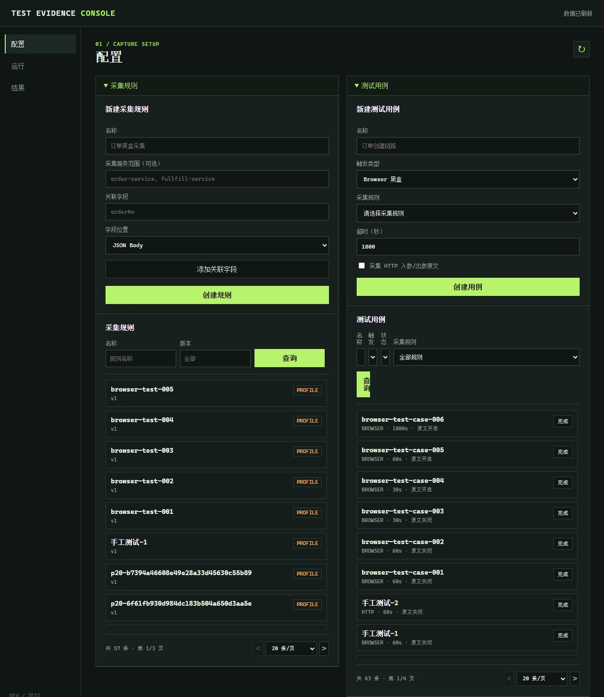
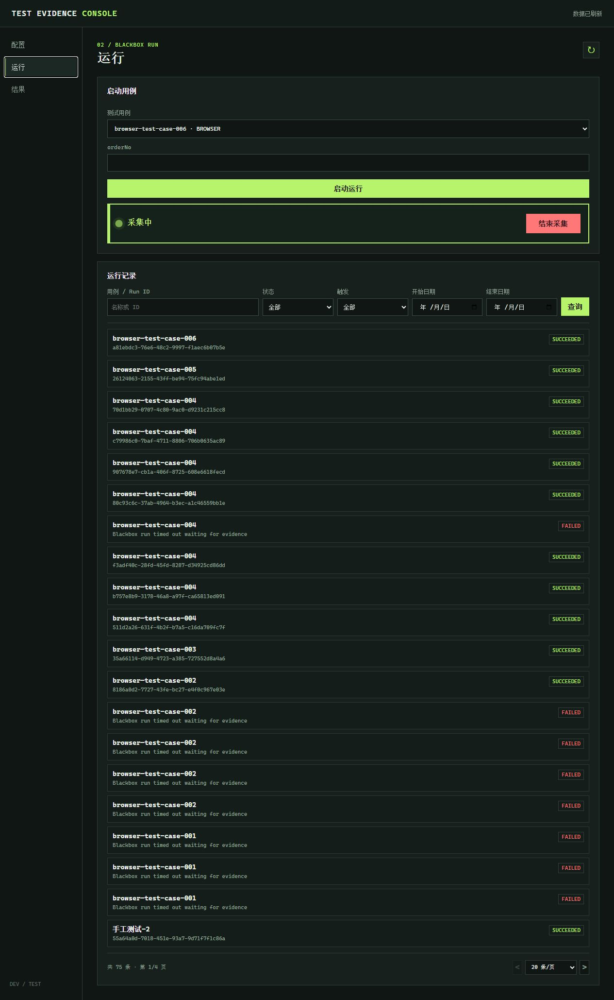
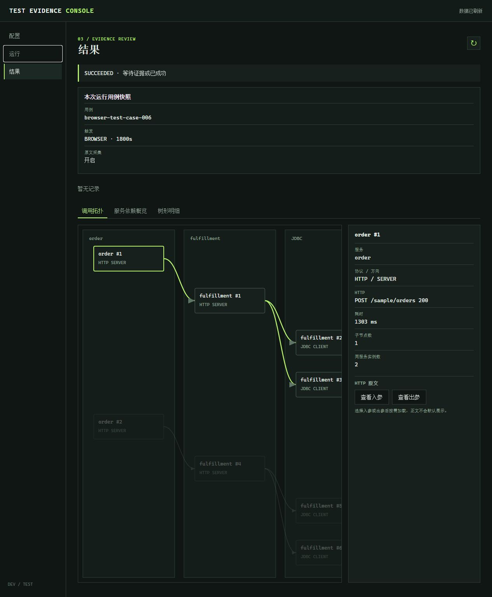
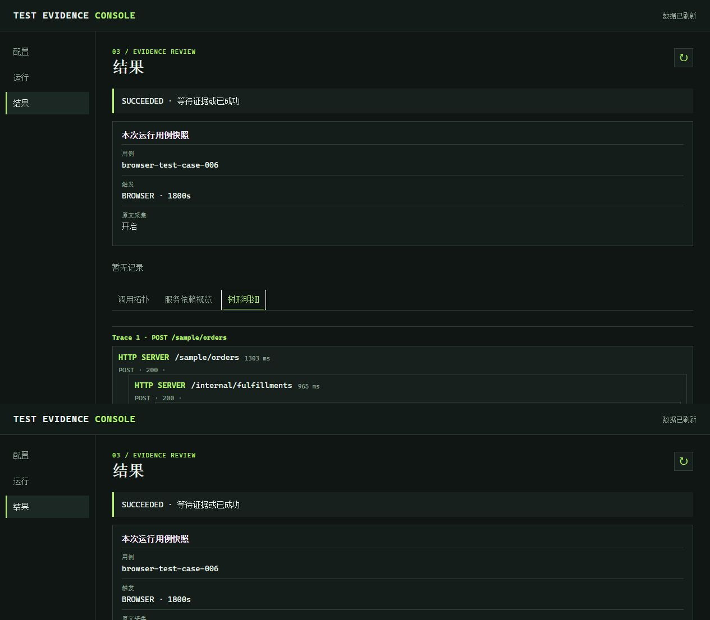

一轮 Browser 黑盒测试怎样流动
启动采集不是直接发起业务请求。它先把关联字段及其值下发给 Agent，随后由测试人员回到产品页面完成真实操作。
定义 orderNo 等唯一关联字段。
绑定规则，设置超时和原文采集。
填写本次唯一业务值，等待规则下发。
在真实页面查询、修改、提交或确认。
停止新命中，等待在途请求排空。
查看断言、拓扑、树形明细和原文。
创建采集规则
配置页上半部分是“采集规则”。规则决定 Agent 在什么字段、什么位置识别本次测试数据。
填写规则名称和关联字段
名称用于测试人员识别。关联字段建议使用订单号、支付单号、请求流水号等时间窗口内唯一的业务标识。
- 名称：例如“订单黑盒采集”。
- 采集服务范围：可选。知道入口服务时可填写逗号分隔的服务名；不确定时留空。
- 关联字段：例如
orderNo；字段在请求 Body 时选“JSON Body”，在 Header 时选“HTTP Header”。

创建测试用例
测试用例将采集规则、触发方式、超时时间与断言收敛为一个可重复运行的测试单元。
Browser 黑盒
选择“Browser 黑盒”，绑定采集规则并设置超时。测试人员随后在产品页面进行真实操作；本期不将页面 UI 作为断言。
HTTP 接口
选择“HTTP 接口”后，增加请求方法、URL、Header、JSON Body、状态码、JSONPath 和 MySQL 标量断言配置。
为 Browser 用例选择规则
选择上一步创建的采集规则，设置 60 至 3600 秒超时。若要在结果页查看 HTTP 请求/响应原文，勾选“采集 HTTP 入参/出参原文”。
创建后，可在用例列表按名称、触发类型、完成状态和采集规则筛选；完成的 Case 会按保留策略进入清理周期。
启动运行并等待规则下发
在“运行”页选择用例，并填写本次唯一业务标识。不要在未完成下发倒计时时开始产品操作。
填写关联字段值
选择 Browser 用例后，页面会自动显示规则定义的字段，例如 orderNo。输入本次测试值后点击“启动运行”。

已创建，等待执行
采集中，可开始产品操作
停止新采集，等待在途调用
结果已结算
回到产品页面完成黑盒操作
平台已记录关联字段值后，Agent 只会把请求 JSON Body 或 HTTP Header 中命中该值的链路写入本次 Run。
执行真实业务流程
- 打开测试环境产品页面，以同一个
orderNo查询订单。 - 执行修改、确认、提交等目标业务动作。
- 页面请求经过 Agent 后，HTTP 入站、下游 HTTP/Dubbo 调用和 JDBC PreparedStatement Evidence 会归入当前 Run。
- 完成操作后返回运行页，点击“结束采集”。
在结果页审阅调用证据
选择一条运行记录后自动进入结果页。页面首先显示本次用例快照和断言，然后展示 Span 实例调用拓扑。
调用拓扑：查看真实调用顺序
每个节点都是独立 Span 实例，不会合并重复服务。即使发生 A → B → A → B，也会按四个节点展示。点击节点后，右侧显示服务、协议/方向、HTTP 状态、耗时、子节点数，并可选择“查看入参”或“查看出参”。

树形明细：按父子关系逐层核查
当同一服务多次调用或图形节点较多时，切换“树形明细”。它按 Trace 展开父子关系，适合逐层确认 HTTP 调用与 JDBC 操作发生在哪一段链路中。

三种结果视图如何选择
- 调用拓扑：快速观察跨服务调用、重复调用和失败节点。
- 服务依赖概览：汇总服务间调用次数与失败数，适合分析整体依赖。
- 树形明细：以父子层级回放单个 Trace，适合定位具体请求与 SQL Evidence。
常见判断
为什么查询订单后，修改订单也被采集？
Browser 模式以测试人员手动开始和结束为边界。窗口内所有命中关联字段的请求都会保留，因此查询与修改会成为同一 Run 中的不同根 Trace。
为什么结果里 HTTP 原文没有默认展开？
原文只在创建用例时开启采集后可用，并在右侧节点详情中按“查看入参/查看出参”加载，避免结果页首次打开时传输过多内容。
JDBC 参数摘要为什么不是完整值？
JDBC Evidence 保存 setter、长度和 SHA-256 前缀摘要，用于证明调用与排查参数差异，同时避免把完整敏感参数写入平台库。
什么情况下显示 FAILED？
例如 Browser 运行在超时前未发现任何匹配 Evidence、HTTP 断言失败，或运行过程中出现不可恢复错误。打开该条 Run 后先查看失败原因与用例快照，再核对 Agent 日志和关联字段。